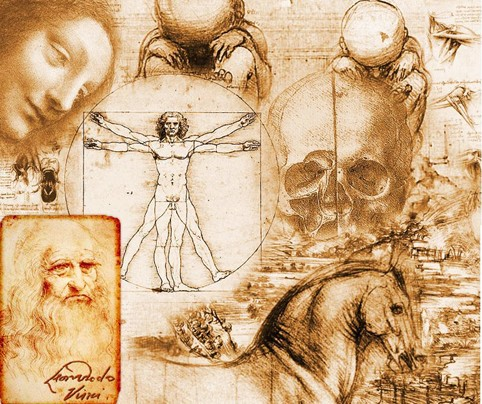

INFORMACIÓN HISTÓRICA

- VACUNA CONTRA LA VIRUELA:fue la primera vacuna descubierta. El mérito lo tiene Edward Jenner, quien en 1796 aisló la viruela de las vacas y
los utilizó como una vacuna exitosa. Uno de los mayores logros en la historia clínica.
- PENICILINA:fue descubierta por Alexander Fleming en 1928, por accidente, gracias a que dejó toda la noche una placa de Petri contaminada
con Penicilium (un hongo) y al día siguiente descubrió que alrededor del hongo había un halo donde no había crecido ninguna bacteria.
- TEORÍA DEL GERMEN:La causa real de la enfermedad los gérmenes fue descubiertos por varios científicos, pero el avance más importante
se produjo en 1854, cuando John Snow vinculó un brote de cólera con los pañales de un bebé que contenían el germen.
- INSULINA:Fue aislada por primera vez en 1921, por científicos de la Universidad de Toronto que más tarde fueron galardonados
con el Premio Nobel por su descubrimiento. Al año siguiente, Leonard Thompson, de 14 años, se convirtió en el primer ser humano en
recibir insulina artificial después de estar cerca de sufrir un coma diabético.
- RAYOS X:Un procedimiento médico tan común como los rayos X fue descubierto por accidente. Su inventor fue Wilhelm Conrad Röntge,
quien en 1895 descubrió que su tubo de rayos catódicos podría producir algunas imágenes inusuales.
- VACUNA TRIPLE VÍRICA:La vacuna combinada contra el sarampión, las paperas y la rubéola fue registrada en 1971 por Maurice Hilleman
y en seguida tuvo un efecto significativo en el número de casos de sarampión reportados.
fuente:https://clinic-cloud.com/blog/descubrimientos-medicos-mas-importantes-de-la-historia/